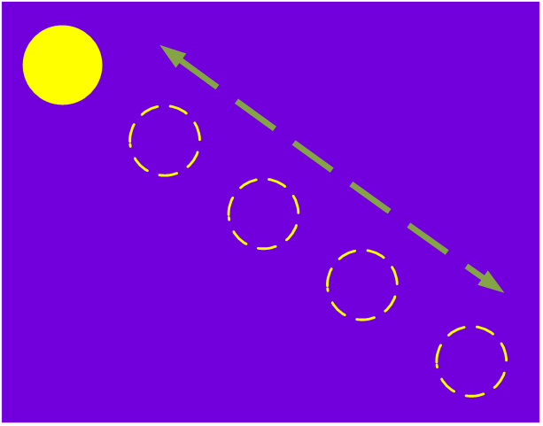

| Start time | Expected observation |
|---|---|
| 00:00:10:05 | A new series of five image subtitles appears: a yellow ‘moon’ moving from upper left to lower right, and then
returning to the upper left, and ending in the middle position.  Overall, the change in positioning is even, without skips in the sequence. |